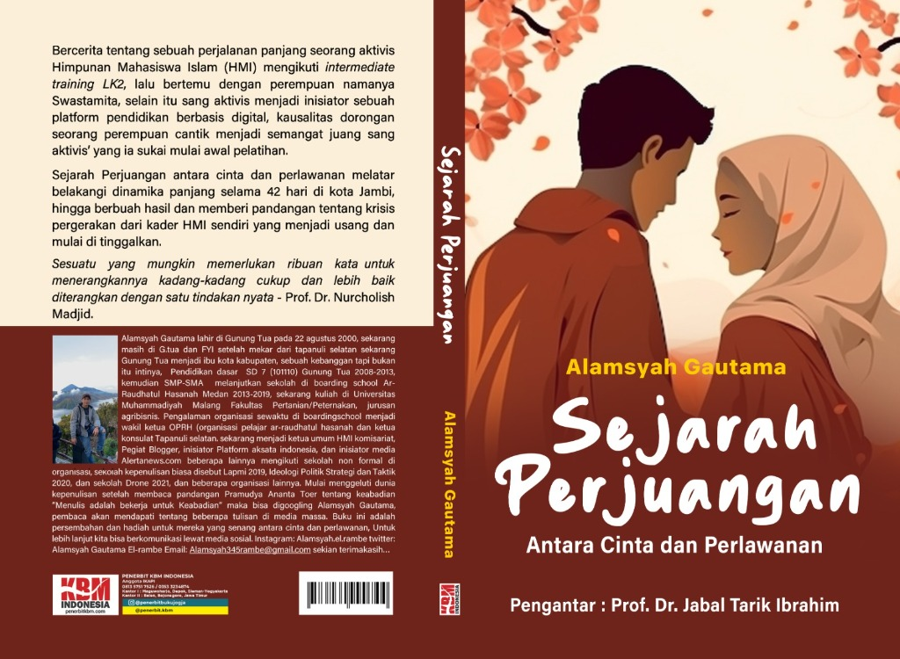
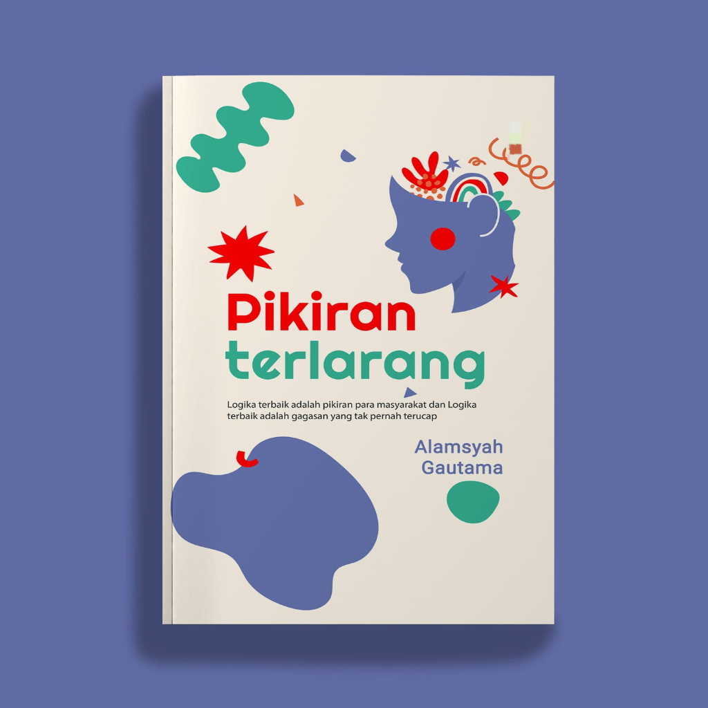
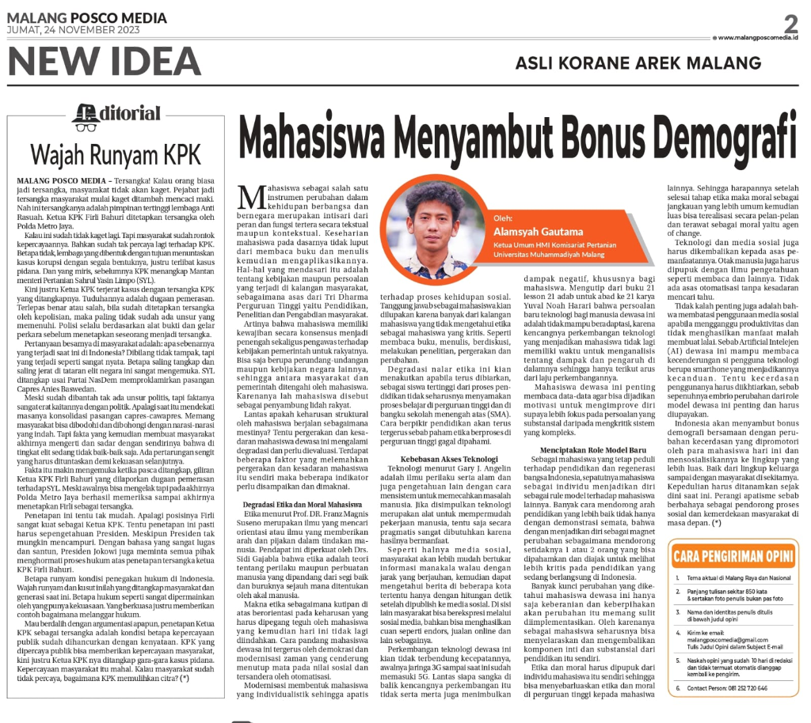

Publikasi Buku & Media

Sejarah Perjuangan: Antara Cinta dan Perlawanan
Pengantar: Prof. Dr. Jabal Tarik Ibrahim
Karya fiksi naratif yang mengupas perjalanan panjang seorang aktivis HMI mengikuti intermediate training LK 2 di Kota Jambi, pergolakan ideologi, serta romantisme di tengah gelombang perjuangan sosial.

Pikiran Terlarang
"Logika terbaik adalah pikiran para masyarakat dan Logika terbaik adalah gagasan yang tak pernah terucap"
Kumpulan refleksi kritis intelektual modern mengenai kebebasan berpikir, kritik terhadap tatanan sosial, dan kondisi kemanusiaan.
Dokumentasi Video & Speaker
Rekaman diskusi publik, podcast, dan penampilan sebagai pembicara di YouTube

Dokumentasi Discussion & Public Speaking #1
Sesi pembicara dan diskusi interaktif mengenai kepemudaan, sosial-politik, dan keorganisasian.
Tonton di YouTube
Dokumentasi Discussion & Public Speaking #2
Penyampaian gagasan kritis dan wacana intelektual dalam forum publik.
Tonton di YouTube
Dokumentasi Discussion & Public Speaking #3
Diskusi mendalam isu-isu hangat seputar mahasiswa, lingkungan, dan gerakan kepemudaan.
Tonton di YouTube
Dokumentasi Discussion & Public Speaking #4
Sesi paparan materi dan kajian intelektual di hadapan para kader dan pemuda.
Tonton di YouTubeLiputan Berita & Publikasi Media
Rekam jejak opini publik, pernyataan pers, dan pemberitaan nasional/regional
Keprihatinan Atas Rentetan Cuaca Ekstrem Melanda Malang Raya
Pernyataan pers Kabid Lingkungan Hidup HMI Cabang Malang Alamsyah Gautama terkait cuaca ekstrem.
HMI Cabang Malang: Wali Kota Gagal Jaga Pohon Suhat
Kritik tajam terhadap ancaman hilangnya Ruang Terbuka Hijau (RTH) di kawasan Soekarno-Hatta Malang.
Kondisi Mahasiswa Asal Sumatra Bertahan Hidup di Malang
Liputan khusus perjuangan mahasiswa perantauan Sumatra saat bencana melanda kampung halaman.
Mengapa Malang Menarik Bagi Pelajar Sumatra Utara
Ulasan perspektif mahasiswa perantauan asal Sumatra Utara menempuh studi di Malang.
Opini: Organisasi Kampus di Ujung Tanduk
Artikel analisis reflektif dinamika dan tantangan keorganisasian kemahasiswaan modern.
Demo HMI di Malang Soroti Penebangan Pohon Suhat
Aksi advokasi mahasiswa mengkritik pengorbanan lingkungan hidup demi pembangunan.
Halaman Penulis Resmi: Alamsyah Gautama
Kumpulan esai dan kolom tulisan analisis sosial-politik resmi di portal Geotimes ID.
Profil Kepemimpinan Alamsyah Gautama (Ketua Umum HMI)
Pemberitaan kepemimpinan dan gagasan terobosan organisasi di HMI Komisariat Pertanian UMM.
Peluncuran & Bedah Buku HMI Komisariat Pertanian UMM
Pemberitaan kegiatan literasi dan peluncuran resmi buku karya Alamsyah Gautama.
Mahasiswa Perantauan Bertahan Tanpa Kiriman Pasca Bencana
Liputan solidaritas dan daya tahan mahasiswa perantauan dalam menghadapi masa kritis.
Opini: Kritik Paradigma Mahasiswa Menyambut Bonus Demografi
Gagasan opini publik mengenai reposisi peran strategis mahasiswa Indonesia.
Penguatan Budaya Menulis & Literasi Kader HMI UMM
Ulasan gerakan literasi dan konsistensi kepenulisan publik mahasiswa Malang.

Malang Posco Media (Koran Official - 24 November 2023)
Penulis Artikel Opini: “Mahasiswa Menyambut Bonus Demografi”
Tulisan analisis mendalam mengenai peran pemuda dan mahasiswa dalam menyikapi tantangan serta peluang bonus demografi di Indonesia.
Blogger & Media Online Independent (2020 – Sekarang)
Official Website: alamsyah-gautama.netlify.app
Aktif mempublikasikan karya jurnalistik, opini publik, artikel budaya, serta ulasan analisis politik-sosial melalui blog pribadi dan berbagai portal berita independen.